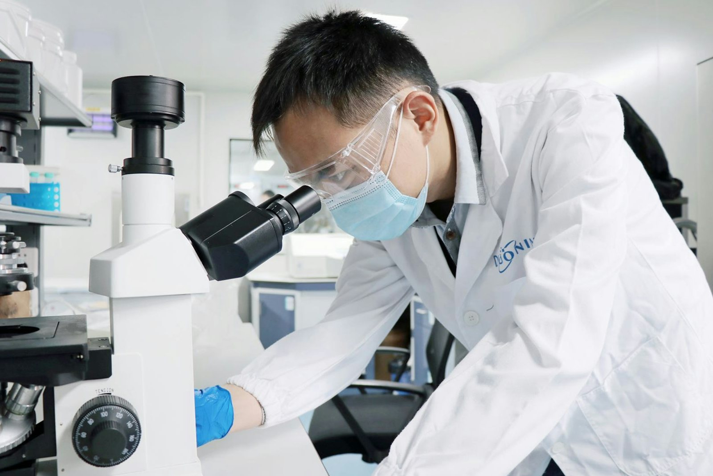

Preclinical to Clinical, One Scientific Team.
Integrated Life Sciences & Scientific Development Partner
Evidence designed, generated and documented to withstand scientific and regulatory scrutiny, coordinated by one team, with qualified partner laboratories and clinical sites where required.
One scientific team coordinating preclinical, bioanalytical and clinical research, regulatory readiness and product development, from first question to regulatory-ready evidence.
For pharma, nutraceuticals, AYUSH, food, cosmetics and medical devices, engaged for a full programme or a single milestone.
About BioVeritasServices we offer
Six connected service areas. Engage us for a complete development programme or targeted support at one milestone.

Clinical Research
Clinical development support across Phase I–IV, from study design and ethics submissions to monitoring, data and reporting, through qualified clinical sites.
- Study Design & Protocols
- BA/BE Studies
- Site & Investigator Coordination
- Data Management & Biostatistics
- Medical Writing

Bioanalytical & Biomarker Services
Validated and fit-for-purpose methods for exposure and biomarker evidence.
- LC–MS/MS
- Biomarkers
- ELISA / LBA

Preclinical Research
Pharmacology, efficacy, safety and DMPK through qualified partner facilities.
- In-Vitro
- In-Vivo
- Toxicology
- PK & ADME

Product Development (NPD)
From concept and formulation to safety, bioanalytical and clinical evidence.
Regulatory & Quality
Strategy, documentation and submission support, with quality built in.

Scientific & Translational Support
Study design, interpretation and reporting that connect results to decisions.
Not sure which service fits? We’ll map it with you.
All servicesIndustries we support
One scientific framework, tailored to every regulatory pathway, from nutraceuticals and AYUSH to clinical-stage pharma.
All industriesNutraceuticals & Supplements
Functional foods, sports nutrition, dietary and herbal formulations.
AYUSH & Natural Products
Traditional medicine, plant-based formulations and ethnobotanicals.
Pharmaceuticals & Biotech
Small molecules, biologics, biosimilars and advanced therapies.
Cosmetics & Personal Care
Safety, efficacy, dermatology and claim substantiation.
Food & Ingredients
Flavours, extracts, bioactives and functional-ingredient safety.
Healthcare & Wellness
Evidence generation for healthcare and wellness products.
Medical Devices
Biological evaluation, ISO 10993 testing and clinical evaluation.
Academia & Public Research
Translational research, grant-funded R&D and scientific consulting.
Research Organisations
Outsourced scientific support for lean teams and consortia.
Product development is one entry point, not the only one.
Engage BioVeritas for the complete project pathway, from product development to safety, bioanalytical and clinical evidence, or commission any service independently.
Need only one step? Every stage can be engaged on its own.
End-to-end scientific partnership across the development lifecycle
Led by Dr. Swati Kaushik and Dr. Akhilesh Mohan, with a multidisciplinary team of scientific, clinical and regulatory experts.
Senior scientific, clinical, and regulatory experts remain directly engaged throughout the development lifecycle, from study design to data interpretation.
Global standards-aligned execution, rigorous documentation, and transparent communication, ensuring sponsors have clear visibility at every stage of their program.
A multidisciplinary network of medical experts, toxicologists, and analytical specialists, bringing extensive experience in regulatory submissions and agency interactions.
Defined by how we think, not only how we execute.
Four commitments that shape every programme we run.
Scientific Rigour
Disciplined thinking in design, oversight and interpretation, so conclusions are sound and meaningful.
Reliable Execution
Structured processes, experienced teams and quality systems delivering consistent, traceable work.
Genuine Partnership
Aligned with sponsor objectives, addressing challenges collaboratively throughout the programme.
Regulatory-Ready Outcomes
Studies designed and documented with audit and agency review in mind from the first day.
How we work
One team. One scientific vision. Coordinated execution from feasibility through final reporting.
Feasibility & Scoping
We frame the regulatory question, evaluate prior data and define endpoints aligned to your submission strategy.
Protocol & Quality Design
OECD/ICH-aligned protocols, statistical planning, SOP review and ethics-committee documentation.
Execution & Oversight
Study conduct through qualified, appropriately accredited partner facilities, with continuous BioVeritas oversight.
Data Review & Interpretation
Quality-assured datasets, rigorous biostatistics, and scientific interpretation that turn complex findings into clear, decision-ready evidence.
Regulatory-Ready Reporting
Regulatory-ready CSRs, IBs, CTD modules, and submission packages, developed with agency expectations embedded from the start.
Bring us your question. We’ll turn it into scientifically sound evidence.
Tell us about your product, stage and regulatory goal. A senior scientist will respond within two working days.